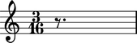

Working with rests
Rest initialization
Initialize Rest with a Rational.
abjad> rest = Rest(Rational(1, 4))

You can use any duration token as a shortcut.
Duration attributes
Rest has a _LeafDurationInterface.
abjad> tuplet = FixedDurationTuplet((1, 4), [Note(0, (1, 8)), Rest((1, 8)), Note(0, (1, 8))]) abjad> rest = tuplet[1] abjad> rest.duration <abjad.leaf.duration._LeafDurationInterface object at 0x6eab0>
_LeafDurationInterface bundles six public attributes.
abjad> rest.duration.multiplied Rational(1, 8)
abjad> rest.duration.multiplier Rational(1, 1)
abjad> rest.duration.preprolated Rational(1, 8)
abjad> rest.duration.prolated Rational(1, 12)
abjad> rest.duration.prolation Rational(2, 3)
abjad> rest.duration.written Rational(1, 8)
Read more at _LeafDurationInterface.
Duration attribute assignment
You can reassign rest.duration.written.
abjad> rest = Rest(Rational(1, 4))
abjad> rest.duration.written = Rational(3, 16)
Use must use a Rational which meets assignability criteria.
You can also assign rest.duration.multiplier.
abjad> rest = Rest(Rational(1, 4)) abjad> rest.duration.multiplier = Rational(1, 6)
abjad> rest.duration.written Rational(1, 4) abjad> rest.duration.multiplier Rational(1, 6) abjad> rest.duration.multiplied Rational(1, 24)
Use any positive Rational.
All other duration attributes are read-only.
Using pitch as a vertical positioner
In addition to the attributes inherited from the _Leaf class (such as duration, grace, etc.), the Rest class also possesses a pitch attribute.
This may seem strange given that rests represent the absence of sound.
However, as a glyph in a score, rests also necessarily have a vertical position relative to the staff.
By default the vertical position of rests is set automatically by the LilyPond renderer, but it can be set arbitrarily with the pitch attribute.
abjad> rest.pitch = -1

Notice how the position of the rest is here moved down so it falls exactly on B3.
To remove pitch from a rest, simply set pitch to None.
abjad> rest.pitch = None